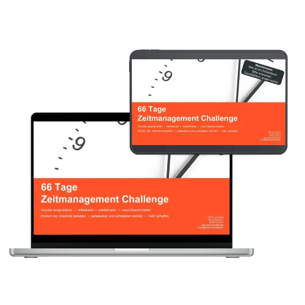

Ebook - Chinas Handelsrouten
Produktprofil · Marktplatz-Daten 2026-10-14 · Verkaufsseiten-Recherche 2026-10-14 · Kategorien: Education, Politics & Economy
- Ebook - Chinas Handelsrouten ist ein/e E-Book in Education und Politics & Economy, vertrieben über den Digistore24-Marktplatz von Anbieter joebgesbuchverleger39ac, gelistet seit 2026-06-18.
- Listenpreis $10.45 (single payment) — Checkout, Auslieferung und Rückerstattungen laufen über Digistore24 selbst, nicht über den Anbieter.
- Käuferschutz: keine standardisierte Garantie-Formulierung gefunden — Rückerstattungsbedingungen vor der Zahlung auf der offiziellen Seite prüfen.
Interesse an Ebook - Chinas Handelsrouten? Aktueller Preis, Boni und Garantiebedingungen finden Sie auf der offiziellen Seite des Anbieters:
Offizielle Verkaufsseite ansehen
Affiliate-Link (Werbung) — wir verdienen ggf. eine Provision, ohne Mehrkosten für Sie.
Marktplatz-Daten
| Produkttyp | E-Book |
|---|---|
| Preis | $10.45 (Single payment) |
| Garantie/Rückgabe | Laut Verkaufsseite des Anbieters — vor dem Kauf auf der offiziellen Seite prüfen |
| Anbieter | joebgesbuchverleger39ac (gelistet seit 2026-06-18) |
Marktplatz-Beschreibung des Anbieters
Dieses fundierte Sachbuch beleuchtet Chinas Aufstieg von der historischen Seidenstraße bis zur modernen Belt-and-Road-Initiative und trifft damit ein hochaktuelles Thema mit großer wirtschaftlicher und geopolitischer Relevanz. Es spricht Leser an, die globale Machtverschiebungen, internationale Handelsstrukturen und die Zukunft der Weltwirtschaft verstehen möchten. Die Kombination aus historischer Analyse, aktuellen Entwicklungen, Fallstudien und wirtschaftlichen Zusammenhängen schafft einen klaren Mehrwert und eine starke Kaufmotivation für wissensorientierte Zielgruppen. Ein attraktives Informationsprodukt mit breiter Zielgruppe und hoher Vermarktbarkeit im Bereich Wirtschaft, Politik und internationale Beziehungen.
Von der Verkaufsseite des Anbieters
Seitentitel: Chinas Handelsroute von C. J. Jünger - Digistore24
Abschnitts-Überschriften
- Chinas Handelsroute von C. J. Jünger
- Chinas Handelsroute von C. J. Jünger
- Chinas Handelsroute von C. J. Jünger
Einstiegstext
Einleitung China zählt heute zu den wichtigsten Wirtschaftsmächten der Welt. Seine Handelsbeziehungen, Infrastrukturprojekte und wirtschaftlichen Strategien beeinflussen internationale Märkte, globale Lieferketten und geopolitische Entscheidungen auf allen Kontinenten.
Doch wie konnte China diese Stellung erreichen? Welche historischen Entwicklungen legten den Grundstein für den heutigen Einfluss des Landes auf den Welthandel? Und welche Rolle spielt die Belt and Road Initiative, oft auch als Neue Seidenstraße bezeichnet, bei der Gestaltung einer zunehmend vernetzten Welt?
Dieses Buch nimmt Sie mit auf eine umfassende Reise durch die Geschichte chinesischer Handelsrouten. Es zeigt, wie sich Handelswege über Jahrtausende entwickelten, welche wirtschaftlichen und politischen Kräfte dahinterstanden und welche Auswirkungen diese Entwicklungen bis heute auf die globale Wirtschaftsordnung haben. Dabei verbindet das Werk historische Analysen, wirtschaftliche Zusammenhänge und geopolitische Perspektiven zu einem fundierten Gesamtbild.
Die antike Seidenstraße gehört zu den bedeutendsten Handelsnetzwerken der Menschheitsgeschichte. Über Jahrhunderte hinweg verband sie China mit Zentralasien, dem Nahen Osten und Europa und ermöglichte den Austausch von Waren, Technologien, Kulturen und Ideen.
Preisangaben auf der Seite: $10
Recherche-Methode: rohes HTML · 2783 Wörter · Qualität: rich · recherchiert am 2026-10-14. Vollständige Recherche-Datei (MD) ↗
Wie Produkte dieser Art geliefert werden
Allgemeiner Hinweis zu diesem Produkttyp (keine anbieterspezifische Anleitung): E-Books auf Digistore24 werden als digitaler Download geliefert (meist PDF/EPUB): direkt nach dem Checkout erhalten Sie einen Downloadlink oder Mitgliederzugang und können auf jedem Gerät lesen. Für die genaue Anwendung von Ebook - Chinas Handelsrouten sind die offizielle Verkaufsseite und die enthaltenen Materialien maßgeblich.
Gut zu wissen
- Keine Garantie-Formulierung in unserer Recherche gefunden — bestätigen Sie das Rückgabefenster auf der offiziellen Seite, bevor Sie kaufen.
Was ist Ebook - Chinas Handelsrouten?
Ebook - Chinas Handelsrouten ist ein/e e-book in der Kategorie Bildung des Digistore24-Marktplatzes, veröffentlicht von Anbieter joebgesbuchverleger39ac und im Verkauf seit 2026-06-18. Der Anbieter beschreibt es so: "Dieses fundierte Sachbuch beleuchtet Chinas Aufstieg von der historischen Seidenstraße bis zur modernen Belt-and-Road-Initiative und trifft damit ein hochaktuelles Thema mit großer wirtschaftlicher und geopolitischer Relevanz. Es spricht Leser an, die globale " (Marktplatz-Beschreibung des Anbieters, leicht gekürzt).
Ebook - Chinas Handelsrouten Preis: was Sie zahlen
Der Marktplatz listet Ebook - Chinas Handelsrouten zum $10.45 Preis (single payment). Digistore24 fügt im Checkout die gesetzliche Steuer Ihres Landes hinzu — dort sehen Sie den Endbetrag vor der Zahlung. Die Verkaufsseite selbst nennt: $10 (Anbieteraussagen — verbindlich ist der Checkout-Betrag). Eine separate Plattformgebühr gibt es nicht; Anbieter können eigene Upsells nach dem Checkout anbieten.
Ebook - Chinas Handelsrouten Rückerstattung und Geld-zurück-Garantie
Wir haben keine standardisierte Garantie-Formulierung auf der Verkaufsseite gefunden. Rückerstattungen für Digistore24-Käufe laufen über die Plattform: Antrag über den Support-Link in Ihrer Bestell-E-Mail, innerhalb des Garantiezeitfensters, das im Checkout angezeigt wird. Praktischer Rat: Entscheiden Sie innerhalb des Fensters — wenn das Produkt unter den Erwartungen bleibt, erstatten lassen statt irren lassen.
Mechanik im Detail: So funktionieren Digistore24-Rückerstattungen.
Für wen ist Ebook - Chinas Handelsrouten geeignet?
Basierend auf der Bildung-Einordnung und der single payment-Abrechnung richtet sich Ebook - Chinas Handelsrouten an Käufer, die bildung-Lösungen suchen zum Einstiegspreis. Der ehrliche Test ist nicht die Kategorie, sondern Ihre eigene Situation: Werden Sie es realistisch innerhalb des Garantiefensters nutzen? Wenn ja, ist der Preis eine Investition; wenn nein, ist er Ballast — unabhängig von der Qualität.
Ist Ebook - Chinas Handelsrouten seriös? Was Sie vor dem Kauf prüfen
Wir bewerten keine Seriosität — das kann niemand, ohne das Produkt zu nutzen. Prüfbare Punkte, alle auf dieser Seite: die Marktplatz-Historie des Anbieters (im Verkauf seit 2026-06-18), die wörtlichen Verkaufsseiten-Auszüge unten (gekennzeichnet als Anbieteraussagen — deren Werbung, nicht unsere Empfehlung), die Garantiebedingungen im Checkout und die Auslieferungsart. Vorsichtsignale bei jedem Angebot: Countdown-Dringlichkeit gepaart mit vagen Rückerstattungsbedingungen, Testimonials ohne Datum und Anbieterseiten, die den Preis bis zum Checkout verstecken.
Wie kommen Sie nach dem Kauf an Ebook - Chinas Handelsrouten?
Der Checkout läuft über Digistore24. Nach der Zahlung: E-Books auf Digistore24 werden als digitaler Download geliefert (meist PDF/EPUB): direkt nach dem Checkout erhalten Sie einen Downloadlink oder Mitgliederzugang und können auf jedem Gerät lesen. Bewahren Sie die Bestell-E-Mail auf — sie ist Ihr Schlüssel zum/d zur e-book, zu Rückerstattungsanträgen und zum Digistore24-Käufersupport.
Ebook - Chinas Handelsrouten Erfahrungen: so recherchieren Sie richtig
Die meisten „Erfahrungsberichte" zu Marktplatz-Produkten sind Affiliate-Inhalte — einschließlich Seiten wie dieser, die an Käufen mitverdienen. Behandeln Sie jeden Bericht (auch unseren) als Ausgangspunkt und prüfen Sie gegen Primärquellen: die Verkaufsseite des Anbieters, die Digistore24-Rückerstattungsrichtlinie und — für bildung — unabhängige Communities außerhalb des Affiliate-Ökosystems. Auf dieser Seite sind die Verkaufsseiten-Auszüge unten wörtlich zitiert, damit Sie die Aussagen des Anbieters bewerten können, ohne wegzuklicken.
Wie Sie Ebook - Chinas Handelsrouten sicher kaufen
- Öffnen Sie die offizielle Verkaufsseite und lesen Sie das vollständige Angebot.
- Bestätigen Sie Endpreis und Garantiezeitfenster auf der Digistore24-Kassenseite — sie ist bindend, kein Vergleichsportal.
- Zahlen Sie innerhalb des Digistore24-Checkouts (niemals per Überweisung oder Off-Platform-Links).
- Speichern Sie die Bestellbestätigung; notieren Sie die Rückerstattungsfrist im Kalender.
- Prüfen Sie zügig. Der Digistore24-Käufersupport hilft, wenn der Anbieter nicht reagiert.
Vollständiges Recherche-Archiv für dieses Produkt (Markdown: kompletter Marktplatz-Datensatz + wörtliche Verkaufsseiten-Auszüge): Ebook - Chinas Handelsrouten — vollständiges Datenarchiv (Markdown-Datei: 57051-ebook-chinas-handelsrouten.md).
- Listenpreis & Abrechnung — Quelle: offizielle Digistore24-Marktplatz-API, Stand 2026-10-14. Maßgeblich für den aktuellen Preis ist immer die Kassenseite.
- Verkaufsseiten-Zitate — Quelle: https://www.checkout-ds24.com/product/703295, abgerufen 2026-10-14 (Methode: rohes HTML). Verify: offizielle Seite öffnen.
- Garantie / Rückgabe — vom Anbieter festgelegt; vor dem Kauf auf der Verkaufsseite bestätigen.
- Nicht von uns geprüft: Produktqualität, Ergebnisse, Testimonials — kein Praxistest für dieses Listing durchgeführt.
Häufige Fragen zu Ebook - Chinas Handelsrouten
Antworten aus dem Marktplatz-Snapshot (2026-10-14) und der Verkaufsseiten-Recherche (2026-10-14); Anbieteraussagen sind inline gekennzeichnet.
Was ist Ebook - Chinas Handelsrouten?
Ebook - Chinas Handelsrouten ist ein Angebot des Typs „E-Book" im Digistore24-Marktplatz, Anbieter: joebgesbuchverleger39ac, gelistet seit 2026-06-18. Eingepflegt unter Bildung und Politik & Wirtschaft. Digistore24 wickelt Checkout, Lieferung und Rückgaben ab.
Wie viel kostet Ebook - Chinas Handelsrouten?
Der Digistore24-Marktplatz listet es für $10.45 (single payment). Preise legt der Anbieter fest und können sich ändern — der Marktplatz-Eintrag oben zeigt den Schnappschuss; die offizielle Verkaufsseite zeigt den aktuellen Preis.
Gibt es eine Geld-zurück-Garantie für Ebook - Chinas Handelsrouten?
Unsere Verkaufsseiten-Recherche hat keine explizite Garantie-Formulierung gefunden. Viele Digistore24-Produkte bieten 60 Tage Geld-zurück, aber das legt jeder Anbieter selbst fest — bestätigen Sie es auf der offiziellen Verkaufsseite, bevor Sie kaufen.
Ist Ebook - Chinas Handelsrouten seriös?
Wir bewerten keine Seriosität — wir veröffentlichen überprüfbare Zahlen: Anbieter joebgesbuchverleger39ac (gelistet seit 2026-06-18), mit der vollständigen Verkaufsseiten-Recherche archiviert auf dieser Seite (Anbieteraussagen als solche gekennzeichnet). Lesen Sie unsere 6-Punkte-Bewertungsmethode und entscheiden Sie anhand der Zahlen — oder diskutieren Sie Ebook - Chinas Handelsrouten auf GitHub.
Wo kann ich Ebook - Chinas Handelsrouten sicher kaufen?
Nur über die offizielle Verkaufsseite, die auf dieser Seite verlinkt ist (Checkout und Rückgaben laufen über Digistore24). Prüfen Sie dort Preis und Garantie vor der Bestellung. Der Link ist ein Affiliate-Link — der Kauf unterstützt diese Website ohne Mehrkosten für Sie.
Wie erhalte ich Ebook - Chinas Handelsrouten nach der Zahlung?
Der Checkout läuft über Digistore24: Nach der Zahlung erhalten Sie Ihren Zugang oder Download per E-Mail und in Ihrem Digistore24-Kundenkonto. Lieferdetails für diesen Produkttyp: E-Books auf Digistore24 werden als digitaler Download geliefert (meist PDF/EPUB): direkt nach dem Checkout erhalten Sie einen Downloadlink oder Mitgliederzugang und können auf jedem Gerät lesen. Bei Problemen kann der Digistore24-Käufersupport Ihre Bestellung wiederherstellen.
Alle 50 Käuferfragen zu Bildung — das komplette Kategorie-FAQ.
Ebook - Chinas Handelsrouten auf Reddit diskutieren
In Community-Threads vergleichen echte Käufer Erfahrungen. Wir verlinken Communities, keine einzelnen Posts — Threads verschwinden, Subreddits bleiben:
- Reddit-Suche nach „Ebook - Chinas Handelsrouten" — Live-Ergebnisse, von uns nicht beeinflusst.
- Top-„Erfahrungs"-Treffer dieses Jahr — selbst nach Aktualität filtern.
Passendes auf Amazon.de
Physische Produkte und Zubehör, die häufig zusammen mit Ebook - Chinas Handelsrouten gekauft werden:
- Education auf Amazon.de — Top-Ergebnisse, Amazon-Ranking.
- Bestseller: Education — live Liste von Amazon, von uns nicht kuratiert.
Werbung: Als Amazon-Partner verdient DigistorePicks DE an qualifizierten Käufen (Partner-tag adminstorede-21). Amazon setzt eigene Preise und Provisionen (niedrige einstellige Prozente — weit unter den 30–75% der Digistore24-Anbieter). Amazon ist ein Convenience-Angebot für Sachprodukte, kein Ersatz für das digitale Produkt oben.
Ähnliche Angebote in Bildung

ZUGRIFF FÜR ALLE! Jede Person, die ein Arbeitsverhältnis mit Ihnen als Schulgemeinde hat sowie eine E-Mail-Adresse von Ihrer Schule, hat die Zufriffsberechtigun

MATRIXPRINZIP – High-Ticket-Produkt mit bis zu 820,56€ Provision pro Verkauf! Mindset, emotionale Intelligenz und finanzielle Intelligenz – genau die Fähigkeite

Eine bislang noch einzigartige Ausbildung auf dem Markt für eine interessante Zielgruppe! Das Pferdegestützte Coaching auf Basis systemischer Grundlagen erlerne

Für die Teilnehmer ist die Gesamt- oder Teil-Ausbildungen möglich. Empfehle das einzigartige Produkt & verdiene passives Einkommen durch unser effektives Ay
Weitere Angebote von joebgesbuchverleger39ac
Gesamtes Sortiment: joebgesbuchverleger39ac Anbieter-Hub — alle Listings mit Marktplatz-Daten.

Dieses Buch trifft einen hochaktuellen Nerv: die wachsende Verunsicherung rund um 5G, elektromagnetische Strahlung und Windkraft. Es spricht gezielt eine kritis

Ein hochaktuelles Sachbuch für politisch interessierte Leser, das die verborgenen Mechanismen globaler Machtstrategien verständlich und tiefgehend aufbereitet.

Dieses Buch trifft den Nerv einer hochaktuellen, stark nachgefragten Thematik rund um Geopolitik, Machtstrukturen und den Iran-Konflikt und spricht eine informa

Dieses Buch trifft den Nerv einer stark wachsenden Nachfrage nach Stressreduktion, Achtsamkeit und mentaler Gesundheit in einer überreizten, urbanen Welt. Es ve
Gleicher Anbieter auf unserer englischen Website
- Ebook - My Human Quest — $82.18 (Personal Development)
- Ebook - The Control Series — $30.21 (Personal Development)
- Ebook - The Human Condition System — $25.72 (Personal Development)
Gleicher Anbieter, englischsprachige Marktplatz-Listings.
Ebook - Chinas Handelsrouten ist auch gelistet in
Politik & Wirtschaft (33 Produkte)
Ähnliche Preislage in Bildung
Vídeos ads for promotions. 74 Seiten XXL Malbuch: Deutsche Nationalmannschaft 2026 - Zum Ausmalen für echte Fußballfans

ebook 66 Tage Zeitmanagement Challenge Für wen ist dieses ebook interessant? Für alle, die sich mit dem Thema Zeitmanagement / Selbstmanagement befassen möchten
Ähnliche Suchanfragen
Wo Sie es sich ansehen können
Wo Sie es sich ansehen können
Aktuelle Preise, Garantie und Boni finden Sie auf der offiziellen Verkaufsseite:
Offizielle Verkaufsseite ansehen
Das ist ein Affiliate-Link (Werbung) — kaufen Sie darüber, verdienen wir ggf. eine Provision, ohne Mehrkosten für Sie.
Quellen & weiterführende Informationen
- Offizielle Verkaufsseite (aktueller Preis, Garantie, Boni): www.checkout-ds24.com/product/703295 (Affiliate-Link)
- Öffentliche Digistore24-Produktseite: checkout-ds24.com/product/703295
- Vollständige Recherche-Datei (Markdown, versioniert): content/products/57051-ebook-chinas-handelsrouten.md
- Marktplatz-Kategorie: Bildung
Wie wir Produkte wie Ebook - Chinas Handelsrouten bewerten
Sechs Prüfungen, ausschließlich mit offiziellen Marktplatz-Zahlen. Die vollständige Bewertungsmethode lesen · unsere Recherche-Standards & Kennzeichnung.
Fragen oder eigene Erfahrungen mit Ebook - Chinas Handelsrouten?
Praxis-Tests veröffentlichen wir erst, nachdem wir ein Produkt selbst gekauft haben — aber Ihre Erfahrung hilft anderen Lesern: Diskussion zu Ebook - Chinas Handelsrouten auf GitHub starten/verfolgen. Falsche Zahl gefunden? Korrektur melden — jede Seite zeigt ihre Datenstände, Korrekturen gelten für die ganze Website.